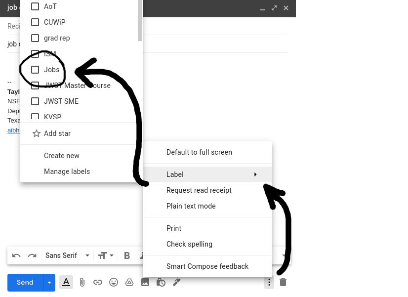
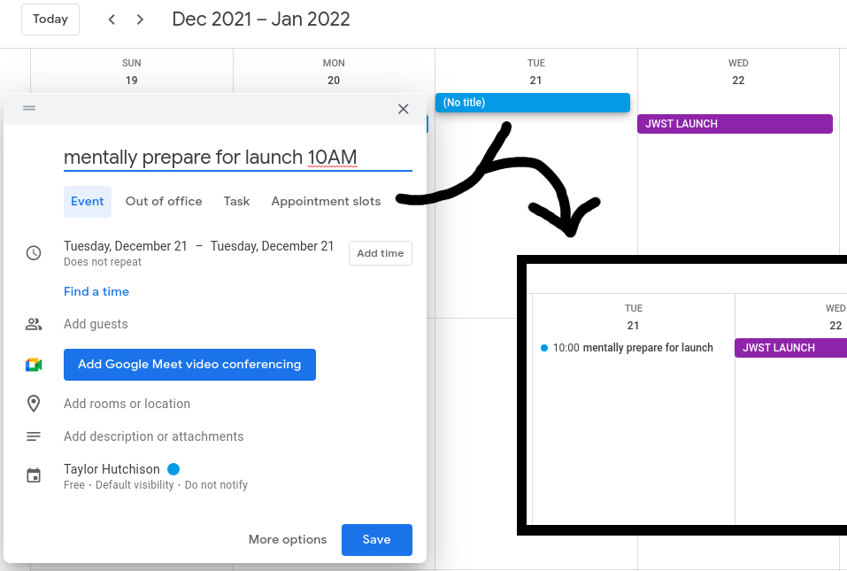
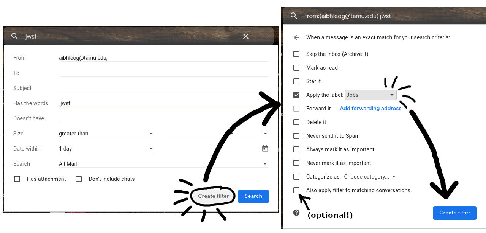

This is a lot.
As someone who just went through her first job cycle... oof. I definitely benefitted from having colleagues and friends help me figure things out, sharing tips and tricks, and pointing me towards resources. Throughout my job cycle, I wrote down all of it (and other things I figured out) in the hopes that this information can be helpful for those who come after me. If you're just now approaching your first job cycle, congrats! That's a big milestone in your career, and you absolutely deserve to be here. Hopefully this massive list of tips, tricks, and resources will help make this process less completely unknown and overwhelming for you. Thank you to the many wonderful people who looked over this page and provided feedback, more items/resources to add, etc.: [name 1], [name 2], ....
READ THE JOB SOLICITATIONS FULLY. Take note of any formatting requirements, any page limits or word limits, anything they specifically want you to mention. For fellowships, especially, pay attention to anything they DON'T want (for example, the NSF AAPF now requires that apps focus <50% on NASA-supported data). Do everything the solicitations specify so that your app isn't immediately thrown out.
- Giving talks at institutions — when you visit a place to give a talk, ask to meet with people who are in your subfield -- but also (if it works out) as to meet with people who have held fellowships that you're planning to apply for. Ask them then for fellowship examples, etc.
- Establish clear expectations with your advisor — Ask your advisor if they'll have time to read your statements or they want them in advance, etc. Tie this into your working style and planning.
- In preparing for interviews — look up common interview questions, prepare for them -- what skill or tool could I spend the next few months refreshing that would be very helpful for your institution?
First, I want to share my personal philosophy about personal branding and professional development. Namely, that personal branding is often under-appreciated and is actually incredibly valuable and a powerful tool. This can manifest in different ways -- for example, if you create a username for yourself that is very unique, fairly easy to spell, and representative of you in some way, chances are that username will be available on every platform you have. At that point, you can make everything (email, twitter, instagram, Linkedin, GitHub) have the same username, and networking will become that much easier. Another part of this is cultivating your resources: such as your CV, your website (if you don't have one, continue reading), your GitHub (if you don't have one, continue reading), your Linkedin, and anything else that you may use. The more frequently you spend time updating and aesthetically organizing these resources, the more complete your professional profile becomes. Doing this quickly develops into an impressive profile of resources that show that you are intentional about your professional development. The best part about this is that if you keep up with all of this, doing a little bit of work on it here and there, it naturally grows more and more with little effort from you at any given time. Compare this technique to the amount of time and stress required if you tried to create a CV from scratch right before your first job app -- chaos. Putting in the time now and intentionally thinking about this will pay off, I promise.
GITHUB — as the modern astronomer frequently moonlights as a computer scientist, online websites like GitHub (that can house software development and implement version control using Git) are fantastic resources to use and develop. In job & fellowship applications, cultivating your GitHub and linking it to your apps/CV/etc. is a great idea. Below I'll specify a few ways I have personalized my GitHub, in case it helps you think through how to work on yours.
- Be intentional about your username. When you're making your GitHub for the first time or when you're thinking about how to revamp your account, think carefully about what you want your username to be. Ideally, you should pick a name that is unique to you (also, in my opinion, preferably without a list of numbers at the end, ex: taylor2798) and easy enough to remember or spell. For example, if your name is available by all means take that, but try not to let your username be too many characters either. When I made my account, my name (in every variation) was taken already. So I used the word "aibhleog" because it was already my grad school email and it's a Gaelic word that no one else would use. One of the major advantages to picking a good username for GitHub is that you can host your website from GitHub, which ends up being [your-username].github.io -- so as you can see, being intentional with your username is a great idea.
- Add a GitHub bio to your GitHub Profile. This is a relatively new feature (c. 2020, I think) that allows you to create a README that appears on your profile, kind of like a bio. It's super easy to set up and there are lots of great examples on how to customize it to be exactly like you want. Also -- along the same lines as before -- this is a GREAT way to build up that professional overall profile that I mentioned before. Below are some links that can help you get more familiar with how to make and customize your own.
- Commit often. Not only is this a good idea in general, because this is where the power of version-controlled coding comes in, but it also boosts your activity bar on your GitHub profile. Which is a good idea because it shows consistency in work and developement.
- Pinning certain repositories to your profile. Another great way to cultivate your GitHub profile is to pin specific repositories to it, in order to highlight them. You can select up to six repositories to pin, which can include your own repos and/or ones that you've forked.
- Having more than one repository. This may seem obvious, but having more than one reposity on your GitHub helps to show that you've 1) taken the time to use GitHub, and 2) shows that you're cultivating a few different projects. These repositories could be anything. If you're comfortable having the code you write for research version-controlled via a public GitHub repo, that's an excellent example of a repository to have on your profile -- with the added bonus that it's one that you'll be very active in! As for other repositories, I recommend having 1-3 others as well, to flesh out your GitHub profile. For myself, I love to dabble in different small projects that allow me to explore something I'm curious out and/or learn a new coding package or technique that I otherwise wouldn't use in my own research. You can check out some of the little GitHub projects I have linked below, as well as some ideas for various kinds of coding projects you could dabble in if you're interested. I also host this website off of my GitHub, so that another very active repo. Additionally, you can fork other people's repositories and there have your own copies linked to your GitHub as well. HOWEVER, none of this is required. You could also do something as simple as making a repository to store code you've used for certain plots, a repository for a script you've written to automate something or a productivity tool, etc.
PERSONAL WEBSITE — as any fellow grad student in my graduate program could tell you, an agenda that I push hard is that every academic should have a personal website. Even if it's just an online platform for your publication list and CV/resume
— MAKE A PERSONAL ADS LIBRARY — This was some great advice I got from my friend Dr. Emily Martin. By making a personal ADS library with every paper you have led or been a co-author on, you can link this on your CV, website, etc. Also, you can export your citations to a table of authors and affiliations (helpful when a job asks for a publication list). my public ads library
- How to do this: First, make a personal ADS library on your ADS account, name the library with your name – for example, mine is Taylor A. Hutchison. Make sure that the library is public -- you can do this by navigating to the "Manage Access" tab on the library. Finally, take the "public address" link they provide for the library (NOT your URL) and use that wherever you want to link your library.
— Link your ORCID to your ADS, then you can add your papers to your ORCID through an official channel. Additionally, be sure to update your employment and your education on your ORCID profile, as well as adding keywords and linking your website and your GitHub.
— EXPORTING CITATIONS VIA ADS, using custom formatting. Let's pretend that you've made an ADS library for your NSF AAPF application. You want to export all of your citations at once, but the NSF requires that every single author on every single paper is listed (silly, yes I know). With ADS, you can do this in seconds!
- Check the boxes next to the citations you want to export (or check the box that marks all of them).
- Click to the tab in the library that says "Export", it should drop down a list of options (like BibTex, AASTex, etc).
- Click on "Other Formats", which will take you to a new page with a drop down box.
- Click on the box and choose the last entry ("custom format"). A blank box should appear below the drop down box.
- In this empty box, copy and paste the first line of the code I share below (don't include the "// NSF AAPF" part) into that entry box and press "Apply.
// NSF AAPF
%l (%Y), %J, %V, %p.\n
// NPP (separate bib)
%3.2a (%Y), %T, %J, %V, %p.\n
// NPP (in statement)
%3.1m (%Y), %j, %V, %p $\bullet$— adding pdfs together when an app requires it? either do them all in the same doc OR you can combine the separate PDFs by doing
\usepackage{pdfpages}
% right before \end{document}
\newpage
\includepdf[pages=-]{cv.pdf}-
— COVER LETTERS. for the cover letter template: share your template on the website, but also link to other overleaf templates (like what [redacted] uses)
-
— JOB TRACKER SPREADSHEET. Early on into the job cycle, I was looking through the jobs and fellowship that had already posted, marking the ones I was interested in, wondering how I would keep track of everything. Serentipetiously, at that moment my friend Jackie Champagne shared this amazingly detailed spreadsheet that she had made to track all of the fellowships that were in our field. Taking that spreadsheet, I modified it to work for both postdoc jobs and fellowships and used it as my centralized job tracker.
I've made a template version of my spreadsheet job tracker, which is linked below. In the spreadsheet, there are three tabs so you can see how the document changes as you apply for things and begin hearing back from places. Also, I've added a lot of comments with additional information, so hover over the cells with the gold corners to see what comments I've left. Feel free to make a copy of this document and modify it however you want so that it can best fit your job app needs!
-
— RESEARCH STATEMENT/PROPOSAL. Similar to how I set up my cover letters, most of my research statements were generated in the same Overleaf template (the only ones that weren't in this file were the fellowships that had their own templates). Every time I started a new app, I made a new .tex file, copy-pasting a general statement in there and modifying it to fit the specific job better. Then, I comment out everything else in the main.tex file and input that particular job's new .tex file. Check out the template below to see what I mean!
-
— Asking past/current fellows for their apps. When applying for fellowships, it's a great idea to ask current and/or past fellows if they are comfortable sharing their applications that they submitted for the fellowship. Seeing successful examples of a fellowship application can be really helpful when crafting your own. I sent a ton of emails like this at the beginning of the job cycle.
Sometimes, I was just asking if they'd be comfortable sharing their app; other times, I asked if they'd have time to meet and talk about what it's like to be a fellow and how they accomplished the things they proposed for. The latter was especially something I was interested in for fellowships like the NSF AAPF, where they have you propose for not only your science but also a "broader impacts" program.
I'm eternally grateful to every person who replied and shared their application materials with me. In the same spirit, I've generalized my emails that I sent and turned them into templates which you are welcome to use if you find them helpful! You can find the email templates linked below:
- For international jobs, you may need to include your diploma (including the degree you haven't finished yet). For most US-based instutitions, you can download an electronic copy of your diploma from your institution's student portal. However, emailing your department admin or department graduate advisor for advice/directions would also work. — If you plan on applying internationally, try to set this up early!
- Sites like AcademicJobsOnline reuse the letters from your letter writers (as long as your letter writes mark their letters as "generic") so you can save your letter writers from doing so many letters if many apps are through that site. HOWEVER, in this case make sure they write those letters generic -- so, no specific instution names, etc. Otherwise you cannot use those letters for every AJO job app.
-
— LETTER OF REC TRACKER. For each of my letter writers, I created a Google Sheets tracker for each job that I was applying for. This tracker is a heavily modified version of one shared with me by a postdoc friend (& mentor) of mine. In this tracker, I included details such as the job/fellowship name, link to the job ad, who to address the letters to, when the deadlines were, and a checkbox for the letter writer to mark once they submitted a letter. This helped both of us make sure that we were always on the same page. Because I had three letter writers, I made one version of this tracker then made two additional copies, so that each letter writer had their own spreadsheet. Update the name of each file to reflect the last name of each letter writer. Also, I've added a lot of comments with additional information, so hover over the cells with the gold corners to see what comments I've left. Feel free to make a copy of this document and modify it however you want so that it can best fit you and your letter writers' needs! example LoR writer tracker
- — EMAILING LETTER WRITERS. Once I had chosen my letter writers and confirmed that they were willing and comfortable writing me letters of recommendation, I send out official emails to each of them. In these emails, I highlighted the information they would need, including linking their specfic LoR tracking spreadsheets (see point above) and attaching my CV and any job app draft I had. You can see a template of one of the emails I sent to a letter writer, with any identifying information redacted. LoR email template
- — Providing info to your letter writers. [redacted]'s LoR google form (ask permission to make a similar version)
- — Storing all submitted apps. dump statements in folder for letter writers to reference (so they don't have to dig through emails). also email them to notify that a statement was added
- — Emailing reminders of upcoming deadlines. email template for sending reminders about upcoming deadlines? LoR email template
general job interviews tips
- be honest about what you don't know, but make sure that's not all you talk about -- seems like they like to know that you're being honest, tha tyou have a more humble opinion of yourself -- but there's probably a threshold, like "oh you dont' know enough"
- if they wont take a chance on your
- women disproportionately dont' apply for jobs compared to men when they feel they dont match it to a T
- share your skillsets, and things that you don't know but express that you're really willing to learn
- what is the company like? company culture? what are we working on? like what am I getting myself into? -- make sure you understand it
- what does the place you're interviewing at value?
from colleagues:
- Like [redacted] mentioned above, one piece of advice I’ve found useful was also to prepare a list of questions (both “harmless filler” questions and “serious” questions) that you can put out. Unless you know the interviewers well, in the end, the chats can get a bit silent sometimes, and some interviewers are not chatty (I am also a natural introvert myself). So it’s useful to have a list of “harmless” questions that you can turn to, to keep the conversations going (like what kind of computing/observing resources do the students/postdocs use at your institution), as well as “real” questions that shows that you are giving serious thoughts to the position. If you know who’d be interviewing you, it’s sometimes helpful to look up their research profiles (don’t overdo it though). Sometimes it’s useful to mention “Oh I noticed that you wrote this paper (and that paper could be totally irrelevant to the interview)” — that could really get people talking (and show that you are serious at the same time).
- [redacted]'s biggest piece of advice to me was basically "30 minutes isn't enough time to really move the needle, you just want to do no harm" another useful thing he said was to make sure you come in with a list of questions to ask them. makes it obvious that you've considered this place and are actually interested. I can give you examples from me, make sure you understand the format going in. things like who will be interviewing you, should you prepare slides or just have a quick spiel about your future research, etc are fair game to ask beforehand
from hiring perspective
- curiousity is something to look for
- are you thoughtful about the role
- what the team is there for
- are you excited by the prupose of the org?
- does it tie to your career goals?
- candidates that ask good qs stand out
- process-oriented (for [redacted]'s job)
- humility (confidence too of course) -- but you're not working in isolation
- "bias for action" -- are you able to make decisions do them with confidence
organizational tips
make a new CSS class so the sizes are custom at large screen sizes and fit for small screen sizes
- can label outgoing emails (i labeled Jobs) 
- in google calendar, when putting the title if you add the time, it autopopulates the time section. For example, "mentally prepare for launch 10AM" becomes "mentally prepare for launch" set at 10am once you press ENTER. 
- consider adding a thing about organizing your calender using sub-calendars?
- email filters (to sort & pre-label things) 